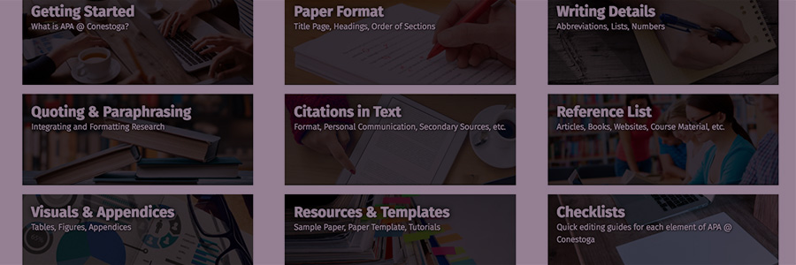

Activity: APA@Conestoga Style
A "style guide" is a set of rules and guidelines, which define how writers are required to format their writing and document their sources of information. There are several different style guides, e.g., MLA (Modern Language Association), APA (American Psychological Association), IEEE (Institute of Electrical and Electronics Engineers). Each one outlines a set of guidelines appropriate to a specific field of study or area of work.
The most widely used style at Conestoga is APA@Conestoga, an adaptation of APA 6th edition designed by Conestoga College faculty and staff.
The APA@Conestoga website
Conestoga College students have access to a detailed and easy-to-use website that covers every aspect of using APA@Conestoga style to format, cite, and document your academic writing.
To practice using this resource, go to the APA@Conestoga home page and find the answers to the following questions. Use the same wording as the web page when you fill in the blanks.
| Question | Answer | Feedback |
|---|